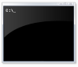

cmdline - Command Line Parser
Introduction
Dealing with command line arguments can be tricky. .NET does some rudimentary command parsing for you but there are a number of things that you probably need to do that it doesn't do that you probably need to do.
- Parse the command line into switches i.e. "/E", switches with arguments "/F:Filename.txt" and parameters (no switch)
- Parse switches with options "/Y-"
- Throw exceptions with unknown switches or invalid values
Install From NuGet

The easiest way to add this to your project is with NuGet
PM> install-package cmdline Successfully installed 'CmdLine 1.0.0.720'. Successfully added 'CmdLine 1.0.0.720' to CleanProject.
Using CmdLine
This library provides a very simple way to parse the command line. It operates in one of two modes.
Argument Mode
With this mode you begin by declaring a class with properties decorated with the [CommandLineArguments] attribute.
C#
Edit|Remove
csharp
[CommandLineArguments(Program = "SimpleCopy", Title = "Simple Copy Title", Description="Sample copy command")]
public class SimpleCopyArguments
{
[CommandLineParameter(Command = "?", Default = false, Description = "Show Help", Name = "Help", IsHelp = true)]
public bool Help { get; set; }
[CommandLineParameter(Name = "source", ParameterIndex = 1, Required=true, Description = "Specifies the file or files to be copied.")]
public string Source { get; set; }
[CommandLineParameter(Name = "destination", ParameterIndex = 2, Description = "Specifies the directory and/or filename for the new file(s).")]
public string Destination { get; set; }
[CommandLineParameter(Command = "A", Required = true, Description = "Indicates an ASCII text file")]
public bool ASCIITextFile { get; set; }
[CommandLineParameter(Command = "B", Description = "Indicates a binary file.")]
public bool BinaryFile { get; set; }
// etc.
}
[CommandLineArguments(Program = "SimpleCopy", Title = "Simple Copy Title", Description="Sample copy command")] public class SimpleCopyArguments { [CommandLineParameter(Command = "?", Default = false, Description = "Show Help", Name = "Help", IsHelp = true)] public bool Help { get; set; } [CommandLineParameter(Name = "source", ParameterIndex = 1, Required=true, Description = "Specifies the file or files to be copied.")] public string Source { get; set; } [CommandLineParameter(Name = "destination", ParameterIndex = 2, Description = "Specifies the directory and/or filename for the new file(s).")] public string Destination { get; set; } [CommandLineParameter(Command = "A", Required = true, Description = "Indicates an ASCII text file")] public bool ASCIITextFile { get; set; } [CommandLineParameter(Command = "B", Description = "Indicates a binary file.")] public bool BinaryFile { get; set; } // etc. }
C#
Edit|Remove
csharp
try
{
arguments = CommandLine.Parse<SimpleCopyArguments>();
}
catch (CommandLineException exception)
{
Console.WriteLine(exception.ArgumentHelp.Message);
Console.WriteLine(exception.ArgumentHelp.GetHelpText(Console.BufferWidth));
// Or show it in a message box if you like.
MessageBox.Show(exception.ArgumentHelp.GetHelpText(Console.BufferWidth), Title);
}
try { arguments = CommandLine.Parse<SimpleCopyArguments>(); } catch (CommandLineException exception) { Console.WriteLine(exception.ArgumentHelp.Message); Console.WriteLine(exception.ArgumentHelp.GetHelpText(Console.BufferWidth)); // Or show it in a message box if you like. MessageBox.Show(exception.ArgumentHelp.GetHelpText(Console.BufferWidth), Title); }

Tokenize Mode
In Tokenize mode, the class simply Tokenizes the command line and allows you to do what you want with the token collection
In this example, given the command
xcopy \customer h:\public\address /s /e /k /p
If I were writing my own version of Xcopy I could parse the command line like this
C#
Edit|Remove
csharp
bool copySubdirectories;
bool copyEmptyDirectories;
foreach (var token in CommandLine.Tokenize())
{
switch (token.Command.ToLower())
{
case "s":
copySubdirectories = true;
break;
case "e":
copyEmptyDirectories = true;
break;
// etc.
}
}
bool copySubdirectories; bool copyEmptyDirectories; foreach (var token in CommandLine.Tokenize()) { switch (token.Command.ToLower()) { case "s": copySubdirectories = true; break; case "e": copyEmptyDirectories = true; break; // etc. } }
Change Log
Version 1.0.4
Modify the CommandArgumentHelp class to use the CommandLineParameter.ValueExample property (if defined) for command syntax. The old version simply used the seperator and command name.
Version 1.0.6
Strong named assembly